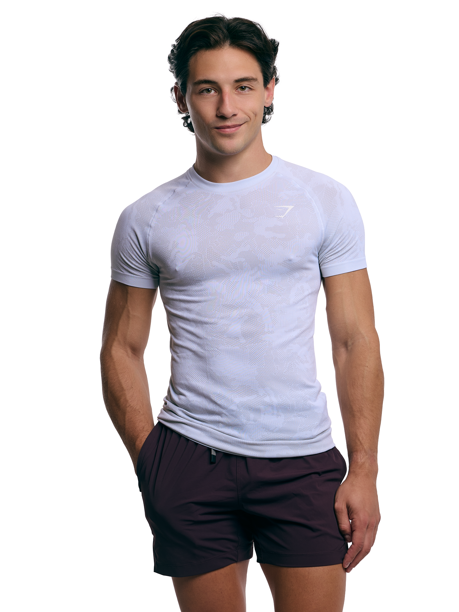

Tyler Wade
Chasing Change was created at one of the lowest points of my life.
I was a lost twenty something with no direction, no structure, and no real reason to get up in the morning. When I looked in the mirror, I didn't recognize the person I was becoming.
I had habits I regretted. I was leaning on distractions and vices just to get through the day. Eventually, staying the same felt worse than starting over. So I built a way out.
What started as a personal system to rebuild my body, my routines, and my confidence became something bigger. The problem wasn't motivation — it was structure. Once structure was in place, change followed.
Chasing Change exists to give people that structure. Not quick fixes. Not hype. Real systems that help you move forward when life feels stuck.